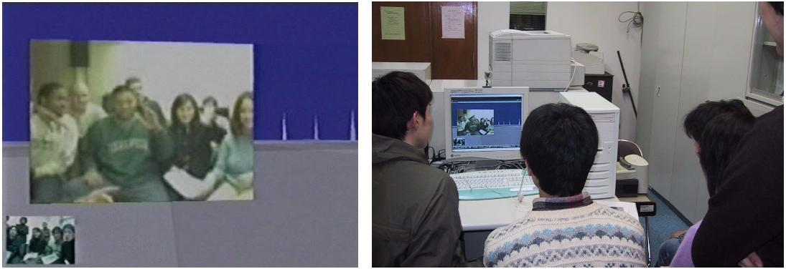

本プロジェクトで開発された仮想都市空間システムが，平成13年度後期における京都大学情報学研究科とスタンフォード大学コミュニケーション学科との共同演習科目に用いられた．演習科目の内容はインターネットを用いた新しい通信手段が人間の心理に及ぼす影響を実験によって確かめるというものである．この実験は，本プロジェクトと通信総合研究所けいはんな情報通信融合研究センターの協力を得て実施された．
演習では，京都大学とスタンフォード大学の学生が数名ずつのチームを2つ構成して，社会心理学実験のテーマ設定から実験システムの構築，実験の運営まで全て共同で行った．両大学の学生は電子メール，チャット，FreeWalkなどを駆使して連絡を取りながら，時差を乗り越えて共同作業を行った．図１は両大学の学生がFreeWalkを用いて打ち合わせを行っている様子である．
「思考様式の日米間の相違」，「コンピュータキャラクタの国籍が利用者に与える影響」といった異文化コミュニケーションに関わる実験テーマが学生によって設定され，日米をFreeWalkで繋いで実験が進められた．それぞれの実験には20人のアメリカ人学生と20人の日本人学生が被験者として参加した．後者の実験では，FreeWalkの仮想空間内にいる社会的エージェントの国籍の影響が調べられた．日本人エージェントとアメリカ人エージェントを登場させ，それぞれに被験者が抱く印象を比較した．その結果，日本側の被験者のデータに内集団効果を観測することができた．

図１．FreeWalkを用いた日米学生グループの打ち合わせの様子
文献：
伊藤 英明，中西 英之，石田 亨，スコット ブレイブ，クリフォード ナス. 社会心理学実験のための仮想空間環境の実装. 情報処理学会論文誌，Vol.44，No.2，pp.256-265，2003.
連絡先：
京都大学 社会情報学専攻 中西英之 nakanishi at i.kyoto-u.ac.jp